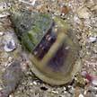

Photo
index of snails on Singapore shores
small
snails (1-2cm) on mangroves, sand, seagrasses, elsewhere |
|

Mud whelk
Nassarius jacksonianus |
|
|
|
| 1.5-2cm.
Shell with a hump on the top. In adults, the underside has a large
thickened flat portion. Sandy areas. Commonly seen on our Southern
shores. |
1.5-2cm.
Shell with smooth front portion, ridges on spire. Silty or muddy sandy
areas. Sometimes seen on some of our shores. |
2-2.5cm.
Shell narrower, with fine, narrow ridges and blue or dark markings.
Sandy areas. Sometimes seen on some of our shores. |
2.5cm.
Shell smooth, sometimes with patterned spiralling band. Body white
with black speckles. Sandy areas near seagrasses. Sometimes seen
on our Southern shores. |
3-4cm.
Shell smooth with only some spiralling ridges near the front, brown
to olive green. Sandy areas near seagrasses. Commonly seen on our
Northern shores. |
|
|
|
|
|
| About
1cm. Shell with ridges and narrow spiral of purple. Sandy areas.
Sometimes seen on our Northern shores. |
1cm
or less. Shell with neat pattern of regular fine bumps and fine brown
lines. Fine sandy area near reefs. Sometimes seen on some of our Southern shores. |
About
1cm. Shell with a long turret and strong sharp ribs across all of
the whorls. Sandy areas. Rarely seen. |
|
|
|
|
|
|
|
| 1.5-2cm.
White with pattern of dots and dashes. On large seagrasses and seaweeds.
Sometimes seen on some of our shores. |
2-3cm.
Shell thick with a narrower tip, smooth, yellow with fine brown dots.
Shell opening with black patch. In mangroves. Sometimes seen in some
of our mangroves. |
1-2cm.
Shell thin, variable colours and patterns. On mangroves and coastal
vegetation. |
|
|
|
|
|
|
|
|
| 1.5-2cm.
Shell pear-shaped white. Mantle transparent with irregular brownish
blotches. Sometimes seen on flowery soft corals especially on our Northern
shores. |
1-1.5cm.
Shell thin, elongated and usually covered with mantle which matches
the sea fan in colour, pattern and texture. Commonly seen on sea fans
on our Northern shores. |
2-3cm.
Shell elongated with pointed tips, mantle maroon with white blotches and yellow bumps. Sometimes seen on sea fans on our Northern shores. |
2-3cm.
Shell elongated with pointed tips, mantle with black blotches and yellow bumps. Sometimes seen on sea fans on our Northern shores.. |
1-2cm.
Shell elongated with pointed tips, mantle red with white blotches and white bumps. Rarely seen, on sea fans on our Southern shores.. |
|
photo
index of
molluscs on this site
|
|